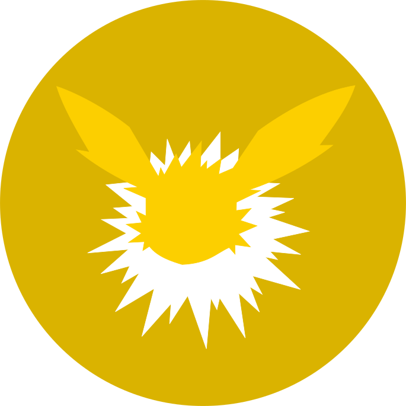
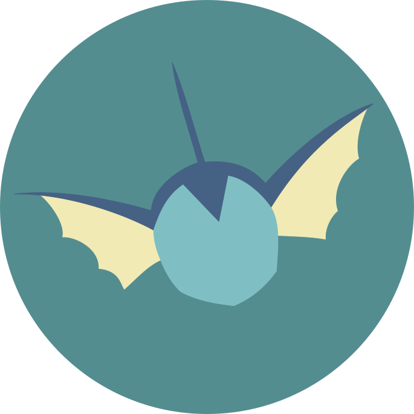
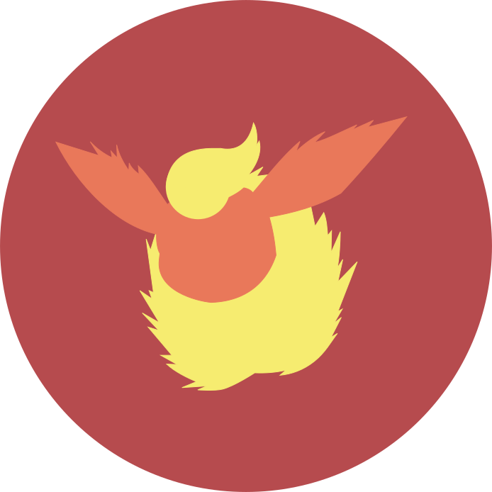

Qu'est-ce que l'Observatoire Sociolinguistique ?
C'est une association à but non-lucratif qui a pour but de rendre accessible et de promouvoir les recherches en sociolinguistique critique et en analyse critique de discours, de sensibiliser et d’outiller tout type de public à la lutte contre les différentes formes de discours de haine et de dominations symboliques.
Nous cherchons à sortir du milieu universitaire et proposer, auprès d'un public élargi et dans nos domaines scientifiques respectifs, un éventail de formations, conférences, cours, publications, réunions de travail ou projets de recherches et d'interventions
Qui sommes-nous ?
-

Claire Hugonnier, présidente (clairehugonnier@tuta.io)
Chercheuse en médiation langagière et culturelle à l'Université Grenoble Alpes, laboratoire LIDILEM.
-

Samuel Vernet, président (samuelvernet@tuta.io)
Chercheur en Sciences du langage à l'Université Aix-Marseille, laboratoire LPL.
-

Mathilde Vernet, trésorière (mathildevernet@tuta.io)
Chercheuse en informatique à l'Université Le Havre-Normandie, laboratoire LITIS.